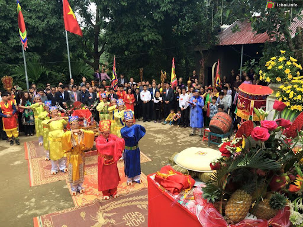

Đình Phú Lễ tọa lạc tại ấp Phú Khương, thuộc huyện Ba Tri, tỉnh Bến Tre. Là ngôi đình tiêu biểu ở Cù Lao Bảo "Nhất Phú Cường, Nhì Phú Lễ".
Được vua Minh Mạng cho phép lập đình vào năm 1826, trên cơ sở ngôi đình bằng gỗ lá được xây dựng trước đó, với gần 200 năm tuổi. Đến năm 1852, đình nhận được sắc phong của vua Tự Đức.
Giữa làng quê yên tĩnh, đình mang một vẻ đẹp uy nghiêm, nổi bật và là niềm tự hào của người dân Phú Lễ nói riêng, tỉnh Bến Tre nói chung khi được UNESCO công nhận là Di Tích Kiến Trúc Nghệ Thuật Cấp Quốc Gia vào năm 1993.Do trải qua chiến tranh và thời gian, các công trình kiến trúc, hiện vật bài trí bên trong (hương án, cuốn thư, hoành phi, bình phong, bao lam, đồ lễ bộ...) có phần xuống cấp và hư hỏng nhiều. Tuy nhiên, qua nhiều lần tu sửa đình vẫn giữ được nét trang nghiêm, cổ kính và là trung tâm tín ngưỡng, nơi người dân gửi gắm những mong ước của mình vào vị thần phò trợ cho làng, được nhà nước sắc phong là "Thành Hoàng Bổn Cảnh"
Giữa không gian yên tĩnh, cổng đình Phú Lễ hiện ra uy nghi và nổi bật. Đình đã gần hai trăm tuổi, qua nhiều lần tu sửa nhưng vẫn giữ nguyên nét cổ kính. Ngôi đình ẩn mình giữa những tán cây cổ thụ, khi mặt trời ló rạng, những tia nắng len lỏi qua từng kẽ lá, chiếu vào tường gạch, thềm đá rêu phong càng tôn thêm nét uy nghiêm, trầm mặc vốn có của đình..
Thềm và móng đình được cấu trúc bằng đá xanh, bên trên xây gạch. Đình gồm tất cả 10 gian:
- 6 gian chính dính liền với mái và 4 gian phụ bố trí theo lối “chữ Đinh” cũng là nhà phổ biến ở đồng bằng sông Cửu Long trước đây.
Cột đình bằng gỗ lim, gỗ quí hiếm ở miền Tây Nam bộ, đường kính 40cm, mái lợp ngói vảy cá.
Hằng năm, lễ hội tại đình Phú Lễ diễn ra hai lần: Lễ Kỳ yên vào ngày 18-19 tháng 3 âm lịch để cầu mưa thuận gió hòa, và lễ Cầu bông vào ngày 9 -10 tháng 11 âm lịch cầu cho mùa màng tươi tốt.
Lễ hội có rước sắc thần, lễ tế Thành Hoàng, tế Tiền hiền, Hậu hiền (khai khẩn, khai cơ).
Đến với những lễ hội này, du khách còn được lắng nghe hát bội và ca nhạc tài tử - một nét văn hóa đặc trưng của vùng đất Tây Nam Bộ. Những di sản văn hóa này vẫn được giữ gìn cho đến ngày nay, trở thành phần không thể thiếu trong cuộc sống tinh thần của người dân Bến Tre.
Khi tham quan và tìm hiểu văn hóa tại đình Phú Lễ, du khách cần chú ý những điểm sau:
- Trang phục nên lịch sự, tránh mặc quần áo quá ngắn hoặc hở hang gây phản cảm.
- Hạn chế cười đùa to tiếng để giữ không gian thanh tịnh của đình.
- Không tự ý chạm vào các pho tượng hoặc đồ đạc trong đình khi chưa được phép.
- Tránh thắp quá nhiều hương để không gây ám khói, ảnh hưởng đến các pho tượng thờ.
- Giữ gìn vệ sinh, không xả rác bừa bãi để bảo vệ mỹ quan của đình.